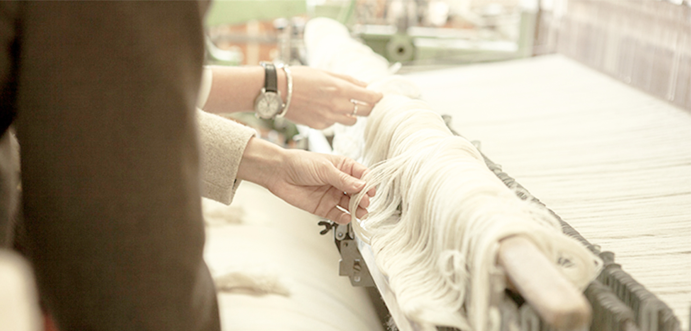
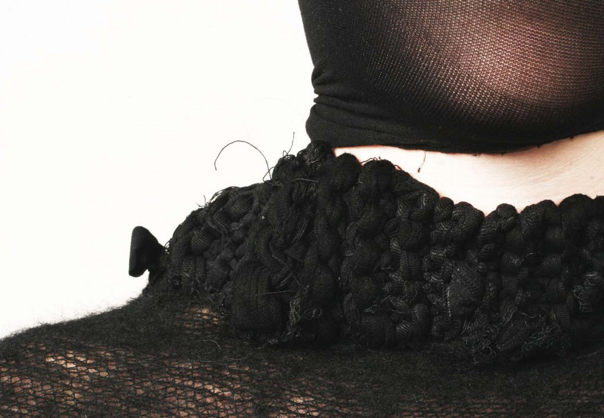

Unlike fast fashion, slow fashion production ensures quality manufacturing to lengthen the life of the garment. Slow fashion may be considered a revolt or action against the fast fashion movement. Developing a garment with a cultural and emotional connection is also pertinent to the purpose behind slow fashion: consumers will keep an article of clothing longer than one season if they feel emotionally or culturally connected to the article of clothing. A taxation is in early stages of development in order to deter fashion companies from purchasing or producing materials that are not made with recycled, organic, or re-purposed materials. Utilizing materials already made will reduce the industry's carbon footprint.

There is also an important movement towards companies being more transparent. The need for companies to show their manufacturing processes boosts the companies reputation and can aid buyers to making more conscious decisions.
Although price is sometimes a deterrent for purchasing slow fashion items, in the long run, one piece of well designed and well produced clothing will outlive five cheap pieces of clothing. Slow fashion clothing is made up of high quality materials usually with timeless designs that can be worn year round and never go out of style. Slow fashion garments should also consider their end of lifecycle. Generally if it is well made and with natural fibers it can be broken down easier. One current problem with the fast fashion industry is the amount of waste generated into landfills.
Empathic Design
Empathic design is a concept that is a part of user-centered design aiming to promote a deeper connection to the consumer, making it important to integrate it with slow fashion. This can be done by understanding the consumers' needs, values, and emotions. Focusing on positive product experience can also result in product or brand attachment which can be broken down into three levels: visceral, behavioral, and reflective.
